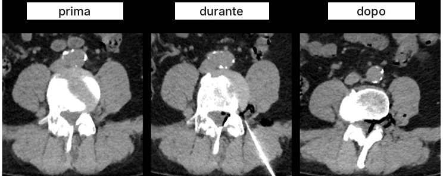

L'ossigeno-ozono terapia consiste nell'iniettare una miscela di ossigeno e ozono: nei muscoli accanto alla colonna, dentro un'articolazione oppure, con tecniche più impegnative, vicino al disco intervertebrale.
I risultati dipendono molto da dove viene usata. Nell'artrosi del ginocchio i dati sono incoraggianti; nel mal di schiena restano incerti. L'ozono è inoltre un gas ossidante, e la dose va rispettata.

Dove ha mostrato di funzionare
Artrosi del ginocchio
È l'impiego con i dati più solidi. Nel confronto diretto con l'infiltrazione di cortisone, le iniezioni di ozono dentro l'articolazione hanno ridotto il dolore in misura maggiore, sia a breve sia a medio termine, con un miglioramento anche della funzione.[4]
Il quadro complessivo resta però disomogeneo: alcune revisioni riportano un beneficio chiaro rispetto al trattamento finto, altre non trovano l'ozono superiore alle alternative già in uso.[3] È un'opzione da considerare nell'artrosi del ginocchio, non una scelta obbligata.
Tendinopatie e spalla
Nelle tendinopatie e nella fascite plantare l'ozono si è comportato in modo paragonabile al cortisone per dolore e funzione; nella capsulite adesiva ha dato un beneficio a breve termine.[3]
Dove le prove non bastano
Nel mal di schiena, compreso quello da ernia del disco, molti lavori riportano una riduzione del dolore, ma sono fra loro troppo diversi per metodo, spesso privi di un gruppo di confronto adeguato e con osservazioni brevi. Una revisione del 2026 conclude che le prove disponibili non sono sufficienti a raccomandare l'ozono come trattamento del mal di schiena.[5]
Non significa che non funzioni in nessun caso; significa che oggi non è possibile affermarlo, ed è giusto saperlo prima di iniziare un ciclo.
Com'è la seduta
La via più usata per la schiena è l'iniezione nei muscoli ai lati della colonna, all'altezza del segmento interessato: punture multiple, poco profonde, per un volume complessivo contenuto. Per il ginocchio l'iniezione è dentro l'articolazione, in genere una volta a settimana per alcune sedute.
Le tecniche che portano il gas dentro il disco o accanto alla radice nervosa sono un'altra cosa: richiedono guida radiologica o TC e un contesto attrezzato.
Durante l'iniezione è comune una sensazione di pesantezza o di tensione nel punto trattato, che passa in pochi minuti.
Dopo la seduta, fai
- Riprendi le attività normali: non è previsto riposo.
- Mantieni il programma di esercizio, che resta la parte principale del trattamento.
- Segnala un dolore che cresce nei giorni successivi o la comparsa di febbre.
Non fare
- Non proseguire oltre il ciclo concordato se non è cambiato nulla.
- Non accettare schemi di cura generici o protocolli uguali per tutti: dose e concentrazione vanno adattate.
- Non confondere questo trattamento con l'ozono respirato, che è tossico per i polmoni e non va mai inalato.
Quando non si fa
- Deficit di glucosio-6-fosfato deidrogenasi (il difetto all'origine del favismo): è la controindicazione principale, per il rischio di rottura dei globuli rossi.[1]
- Infezione in corso nella zona da trattare.
Richiedono una valutazione individuale la gravidanza, l'ipertiroidismo non controllato, le malattie cardiovascolari gravi e lo scompenso cardiaco.[1]
Se non sai se hai un deficit di G6PD, dillo al medico: è un dato che si verifica con un esame del sangue, ed è più frequente in alcune aree del Mediterraneo.
Effetti indesiderati
Il disturbo più comune è una sensazione di pesantezza nel punto di iniezione, lieve e transitoria. Gli altri effetti riportati dipendono dalla tecnica più che dalla sostanza: reazioni vaso-vagali, dolore, ematoma, infezione.[1]
Nelle casistiche sul ginocchio gli eventi avversi sono poco frequenti e di scarsa entità, senza eventi gravi riportati; i dati a lungo termine però sono limitati.[3]
Un punto va detto per intero: l'ozono è un agente ossidante, e il margine fra la dose che produce un effetto utile e quella che produce un danno è stretto.[1][2] La sicurezza dipende dal rispetto di concentrazioni e volumi, e questa procedura non ammette improvvisazione.
Cosa è utile sapere prima
Non esiste un protocollo internazionale condiviso. Concentrazioni, volumi e numero di sedute variano da centro a centro, e gli autori delle revisioni chiedono da anni che vengano standardizzati.[2][3]
L'ozono come gas non è un farmaco approvato. Al di fuori dell'uso infiltrativo di cui si parla qui, le autorità regolatorie lo considerano un gas tossico senza impiego terapeutico riconosciuto, approvato per sterilizzare acqua e strumenti. È una distinzione che vale la pena tenere a mente quando se ne parla in termini generali.[2]
Il meccanismo proposto è indiretto: uno stress ossidativo lieve e ripetuto che attiverebbe le difese antiossidanti dell'organismo e ridurrebbe l'infiammazione.[1] È un'ipotesi coerente con i dati di laboratorio, non una catena dimostrata nell'uomo.
Da dove vengono queste informazioni
- de Sire A, Agostini F, Lippi L, Mangone M, Marchese S, Cisari C, Bernetti A, Invernizzi M. Oxygen-ozone therapy in the rehabilitation field: state of the art on mechanisms of action, safety and effectiveness in patients with musculoskeletal disorders. Biomolecules 2021;11(3):356. doi:10.3390/biom11030356
- Jeyaraman M, Jeyaraman N, Ramasubramanian S, et al. Ozone therapy in musculoskeletal medicine: a comprehensive review. European Journal of Medical Research 2024;29(1):398. doi:10.1186/s40001-024-01976-4
- Lino VTS, Marinho DS, Rodrigues NCP, Andrade CAF. Efficacy and safety of ozone therapy for knee osteoarthritis: an umbrella review of systematic reviews. Frontiers in Physiology 2024;15:1348028. doi:10.3389/fphys.2024.1348028
- Arias-Vázquez PI, Castillo-Avila RG, Hernández-Gil K, et al. Ozone injections reduce pain in knee osteoarthritis: a systematic review and meta-analysis. Medical Gas Research 2026;16(3):286–292. doi:10.4103/mgr.medgasres-d-25-00088
- Delgado-Caicedo MG, Obando AVA, Acevedo-González JC. Ozone therapy in the treatment of low back pain: a systematic review of its evolution, clinical application, and efficacy. Neurocirugía 2026:500796. doi:10.1016/j.neucie.2026.500796
Scheda aggiornata il 16 novembre 2026. Prossima revisione prevista entro novembre 2028.
Per quali disturbi
Le schede dei disturbi per cui questo trattamento viene preso in considerazione, con quello che dicono le linee guida.
Cerca un'altra scheda
Un disturbo, un trattamento, o anche solo il punto che fa male: «formicolio», «tallone», «spalla congelata».